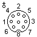

Original VGA (31.5 KHz - 640x480)/SVGA (35-37 KHz - 800x600)
VGA (VESA Standard)
Commodore Monitor 1084/VGA
EGA - TTL (15.74-21.85 KHz)
CGA - TTL (15.75 KHz - 320x200 or 640x200)
Monochrome - TTL (18.43 KHz - 720x350)
Scart
Scart (Japanese style)
S-Video
NeoGeo Audio/Video
Sega Genesis/Sega Master System
Commodore Monitor 1084(S)
JAMMA
PC-Engine
Playstation
Dreamcast
Parallel Port (PC)
Parallel Port (PC/EPP)
Parallel Port (Amiga)
Parallel Port (Amiga 1000)
Sega Saturn
Sega Genesis 2/32X/Nomad
Super Nintendo/Super Famicon
Super Nintendo/Super Famicon (newer models)
Nintendo 64
Jaguar
Game Cube
XBox


